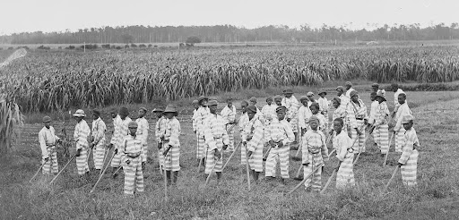

Convict Leasing Program & Convict Labor

- In 1870 the Tennessee State Prison reached a deal with the Tennessee Coal, Iron, and Railroad Company, and established one of the nation's first convict leasing programs.
- In convict leasing, the prisoners earned little or no pay while the states, companies, and prisons themselves benefited profusely.
- Convict leasing was essentially slavery. Law enforcement offices across the South – where convict leasing was popular – began to levy more, often “bogus”, charges against African Americans across the region. Laws were enacted across the Southern states to specifically target Black Americans and put them behind bars in order to preserve slavery, just under a new name. This phenomenon can be seen in the sudden jump in the percentage of African Americans serving time in the Tennessee State Prison - a number that was rarely above 5% before the Civil War, but that hit 62% by 1869.
- This program lasted for around 20 years but faced vehement pushback from both convicts and normal workers until the State Legislature passed the Penitentiary Act of 1893, which banned convict leasing.
- However, the end of the convict leasing program did not spell the end of convict labor in Tennessee. The Tennessee State Legislature mandated that convicts needed to be “gainfully employed” no matter what. Convict labor continued behind the new, 1898 prison’s walls with factories and a for-profit farm being built within the prison’s grounds. Prisoners continued for-profit work in a system designed to profit the state.
- Even today, convict labor is a divisive issue, as the practice still continues.
Riots & Escapes
- Several escape attempts and riots took place when the prison was still in operation.
- In 1902, 16 men smuggled dynamite and firearms into the prison and blew a hole into the East Wing cellblock. Only one of these inmates were killed, shot by an officer, but the rest of them successfully escaped and were never found. This was the biggest escape that the prison would see in its lifetime and there were several yet to occur, but none were ever as extreme as this case. One such case was when one man carved a hole in his cell and covered it up with a blank canvas, allowing 13 inmates to escape.
- In 1975, Inmates took four counselors hostage and demanded the release of a prisoner in maximum prison. They negotiated with the officers and eventually they were promised better conditions and treatment.
- That same year, a riot was initially caused by an inmate fighting a guard over the fact that the cafeteria ran out of pork chops, leading to hostages being taken and around 450 prisoners participating in the riots. Yet again, hostages were exchanged for the promise that conditions would improve. This event was aptly nicknamed the “Pork Chop Riot”, and serves as an example of the sheer unrest in the penitentiary due to the inhumane conditions.
- "Whatever meager privileges we still retain, we will now gamble away," a man wrote in his diary in 1975. "Our backs are to the wall. We have no illusions that we will be rescued from afar. It is our fight: We shall accept the consequences together, whatever they may."
- The underlying idea throughout all of these events is that they were done because of the inhumane conditions that these people had to live through. The sheer amount of violence because of the overcrowding and poor food could have been prevented had the state listened to the complaints
Conditions
- Overcrowding: Both versions of the prison were consistently overcrowded with hundreds over the set capacity. Due to the sheer amount of people contained in a space that was not designed to hold them, tensions swelled between cellmates. This led to major increases in violence, shortages of food, and the inability to move around and act outside of their tiny cells.
- Cleanliness: Cells were overrun with bugs, with one inmate telling an interviewer that he had to sleep in a bed filled with dozens of cockroaches every night.
- Food: The prison claimed its menu would have a variety of well prepared meals, but the food often turned out to be barely edible. On most occasions they were given all of their food options mixed into an inedible substance known as “luby”.
- Labor Conditions: See the top section of this page on Convict Labor for information.
Further Reading
Tennessee State Penitentiary by Yoshie Lewis
Lost Nashville: Now empty, walls of Tennessee State Penitentiary still have stories to tell. Link to the article:Tennessean